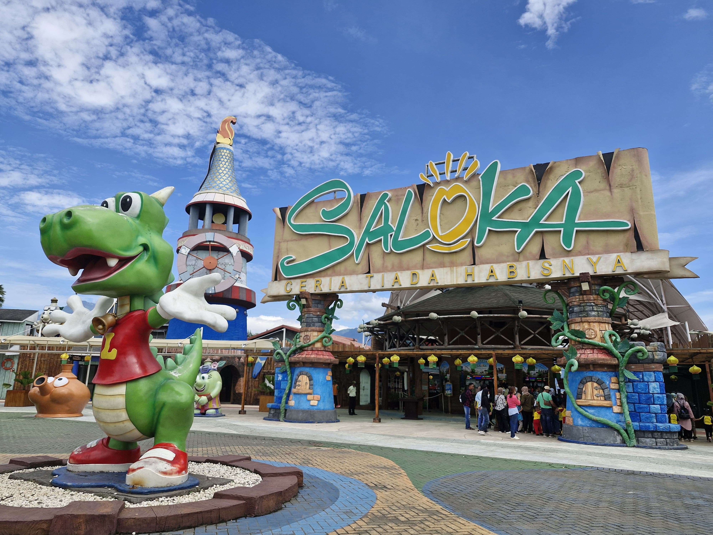

[Daya tarik 1]
[Wahana Permainan yang Beragam – Saloka memiliki banyak wahana seru dan menantang untuk anak-anak maupun orang dewasa.]
Destinasi Pilihan
“Saloka Theme Park, Serunya Tiada Henti, Kenangan Selalu di Hati!” 🎢🎡
Saloka Theme Park merupakan salah satu destinasi wisata keluarga yang terletak di Kabupaten Semarang, Jawa Tengah. Tempat wisata ini menawarkan berbagai wahana permainan yang menarik dan menyenangkan bagi anak-anak maupun orang dewasa. Saloka memiliki berbagai area dengan tema yang berbeda, seperti wahana air, permainan menantang, dan atraksi seru. Selain menikmati wahana, pengunjung juga dapat berfoto, bersantai, dan menghabiskan waktu bersama keluarga atau teman. Dengan suasana yang menyenangkan dan fasilitas yang beragam, Saloka Theme Park menjadi salah satu tempat wisata favorit di Jawa Tengah.
Selain memiliki banyak wahana permainan, Saloka Theme Park juga menyediakan berbagai fasilitas untuk kenyamanan pengunjung, seperti tempat makan, toilet, tempat istirahat, dan area parkir yang luas. Pengunjung dapat mencoba berbagai wahana sesuai dengan usia dan keberanian masing-masing. Lingkungan wisata yang menarik serta banyaknya spot foto membuat Saloka cocok dijadikan tempat berlibur bersama keluarga, teman, maupun rombongan sekolah. Dengan berbagai pengalaman seru yang ditawarkan, Saloka Theme Park menjadi destinasi wisata yang menyenangkan dan berkesan bagi para pengunjung.

Sumber gambar: [https://rri.co.id/semarang/wisata/739628/saloka-destinasi-wisata-pesona-indonesia-tematik]
[Wahana Permainan yang Beragam – Saloka memiliki banyak wahana seru dan menantang untuk anak-anak maupun orang dewasa.]
Pemandangan yang Menarik – Pengunjung dapat menikmati pemandangan indah dengan latar Gunung Telomoyo dan Rawa Pening.[]
[ Spot Foto yang Menarik – Terdapat banyak tempat untuk berfoto bersama keluarga atau teman sebagai kenang-kenangan]